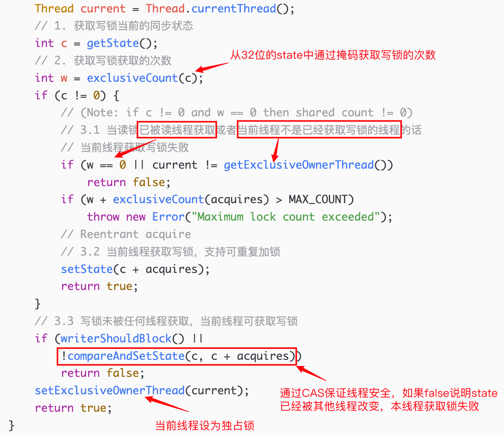
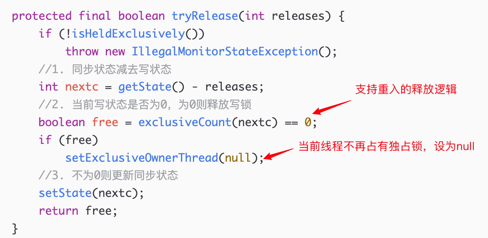
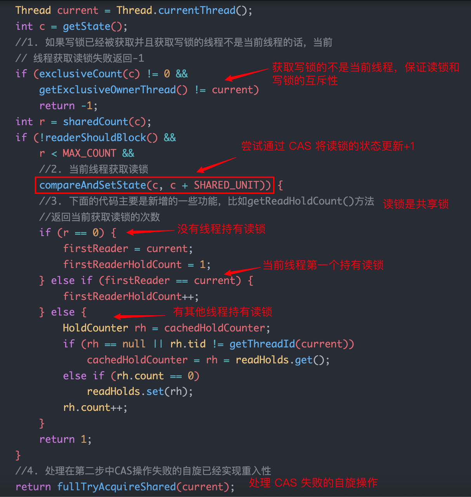
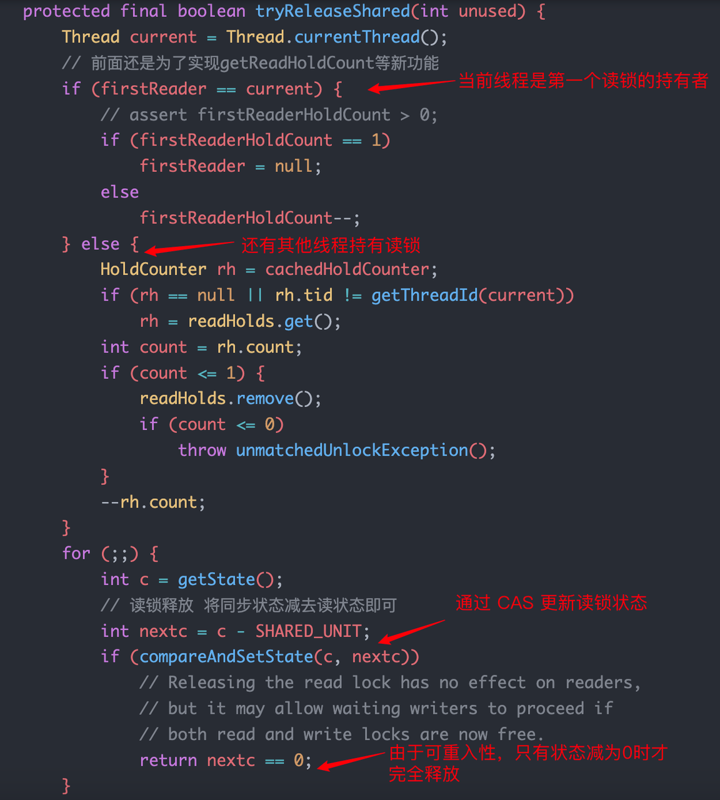
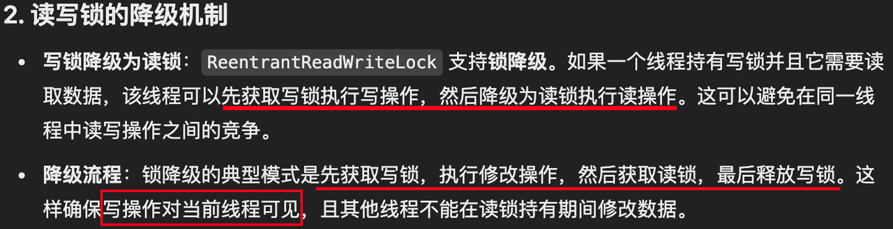
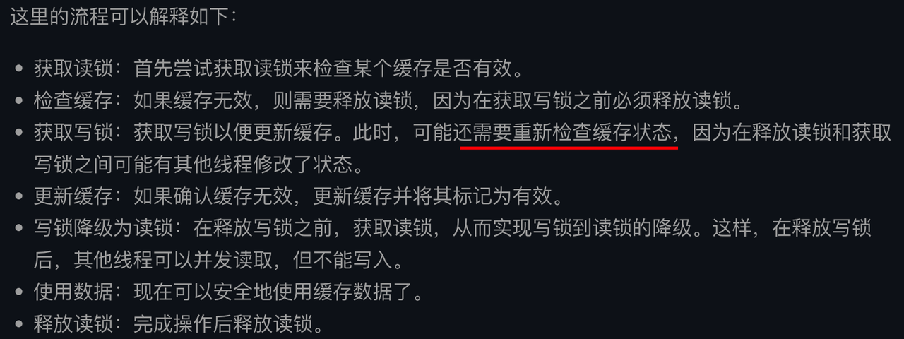

可重入锁 ReentrantLock、ReentrantReadWriteLock
可重入锁支持重入性，表示能够对共享资源重复加锁，即当前线程获取该锁后再次获取不会被阻塞，主要介绍了 ReentrantLock、ReentrantReadWriteLock 两种。
ReentrantLock
支持重入性，表示能够对共享资源重复加锁，即当前线程获取该锁后再次获取不会被阻塞。
ReentrantLock 是通过抽象队列同步器 AQS 在 API 程序级别实现的，其内部类 Sync 继承了 AQS 抽象类，是 Lock 接口的默认实现。
源码
在线程获取锁的时候，如果已经获取锁的线程是当前线程的话则直接再次获取成功；
1
2
3
4
5
6
7
8
9
10
11
12
13
14
15
16
17
18
19
20
21
22// 以内部类 Sync 的 nonfairTryAcquire 方法为例
final boolean nonfairTryAcquire(int acquires) {
final Thread current = Thread.currentThread();
int c = getState();
// 1. 如果该锁未被任何线程占有，该锁能被当前线程获取
if (c == 0) {
if (compareAndSetState(0, acquires)) {
setExclusiveOwnerThread(current);
return true;
}
}
// 2.若被占有，检查占有线程是否是当前线程
else if (current == getExclusiveOwnerThread()) {
// 3.再次获取，计数加一
int nextc = c + acquires;
if (nextc < 0) // overflow
throw new Error("Maximum lock count exceeded");
setState(nextc);
return true;
}
return false;
}由于锁会被获取 n 次，那么只有锁在被释放同样的 n 次之后，该锁才算是完全释放成功。
1
2
3
4
5
6
7
8
9
10
11
12
13
14
15protected final boolean tryRelease(int releases) {
// 1.同步状态减1
int c = getState() - releases;
if (Thread.currentThread() != getExclusiveOwnerThread())
throw new IllegalMonitorStateException();
boolean free = false;
if (c == 0) {
// 2.只有当同步状态为0时，锁成功被释放，返回true
free = true;
setExclusiveOwnerThread(null);
}
// 3.锁未被完全释放，返回false
setState(c);
return free;
}
前面是以非公平锁的锁获取和释放为例，在 ReentrantLock 中支持公平锁和非公平锁两种模式。在非公平锁获取时只是简单获取了当前状态并没有考虑同步队列中线程等待的情况；而公平锁每次只能是同步队列的第一个节点获取到锁。
使用
1 | public class Reentrant { |
注意：使用 ReentrantLock 加锁必须在 try 代码块之前获取，且在加锁之前不能有异常抛出，否则 finally 中无法释放锁。
1 | Lock lock = new XxxLock(); |
与 synchronized 比较
获取和释放锁的机制不同：ReentrantLock 必须手动释放锁，通常在 finally 块中调用 unlock 方法确保锁被正确释放；synchronized 在执行完同步代码块后由 JVM 手动释放。
锁类型不同：synchronized 是非公平锁，而 ReentrantLock 提供两种锁。
底层实现不同：synchronized 是 JVM 层面通过监视器实现的，而 ReentrantLock 是基于 AQS 实现的。
ReentrantLock 通常提供更好的性能。
ReentrantLock 可以通过 tryLock 方法非阻塞式的获取锁。
ReentrantLock 可以终端获得的锁。
ReentrantLock 可以实现多路选择通知（可以绑定多个 Condition），而synchronized 只能通过 wait 和 notify/notifyAll 方法唤醒一个线程或者唤醒全部线程（单路通知）。
ReentrantReadWriteLock
读写锁，允许多个读线程同时访问，但只允许一个写线程访问，这种锁在读多写少的场景下可以极大提升性能。是 ReadWriteLock 接口的默认实现。
前面的 synchronized 和 ReentrantLock 都是独占锁，同一时刻只允许一个线程访问；而在很多只有读数据的业务场景下独占锁性能太低，所以引入读写锁。
读写锁特性
公平性选择：支持非公平性（默认）和公平的锁获取方式，非公平的吞吐量优于公平；
重入性：读锁获取后能够再次获取，写锁获取后能够再次获取写锁 or 读锁（锁降级）；
锁降级：获取写锁之后又获取读锁，最终写锁完成释放，实现写锁降级为读锁，允许其他线程并发读取。

写锁
写锁的获取
同一时刻，ReentrantReadWriteLock 的写锁是不能被多个线程获取的，很显然 ReentrantReadWriteLock 的写锁是独占式锁。
实现写锁的获取是通过重写 AQS 的 tryAcquire 方法实现的，源码：

写锁的 tryAcquire 主要逻辑是：当读写锁的读锁已经被读线程获取 or 写锁被其他写线程获取，则写锁失败；否则成功并支持重入，增加写状态，同时通过 CAS 保证线程安全。
写锁的释放
实现写锁的释放是通过重写 AQS 的 tryRelease 方法实现的，源码：

因为读写锁的 state 字段的低 16 位表示写状态，所以释放锁时可以用当前同步状态直接减去写状态。
读锁
读锁在同一时刻可以被多个线程获取，也就是一种共享锁。实现共享式同步语义需要重写 AQS 的 tryAcquireShared 方法和 tryReleaseShared 方法。
读锁的获取
重写 AQS 的 tryAcquireShared 方法，源码：

读锁的 tryAcquireShared 主要逻辑是：当写锁已经被其他线程获取时，再获取读锁则获取失败；否则可以获取成功，利用 CAS 更新同步状态。
读锁的释放
重写 AQS 的 tryReleaseShared 方法，源码：

锁降级
读写锁支持锁降级，所谓锁降级是：先获取写锁，再获取读锁，最后释放写锁的顺序，能够使得写锁降级为读锁（但不支持锁升级）。
ReentrantReadWriteLock 如何保证写锁和读锁在同一线程时的数据安全问题？

读写锁的应用
1 | public class ReentrantRWCase { |

读写锁的优点